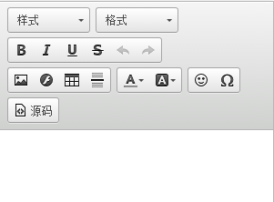
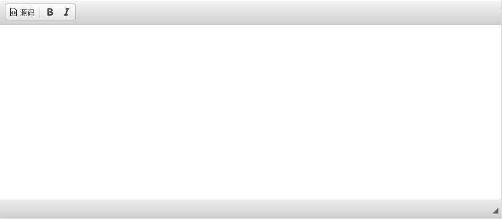
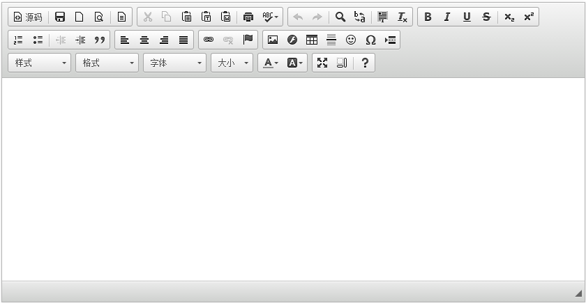

基于django的博客系统如何完美地使用富文本编辑器ckeditor？
django是一个容易快速上手的web框架，用它来创建内容驱动型的网站（比如独立博客）十分方便。遗憾的是，django并没有提供官方的富文本编辑器，而后者恰好是内容型网站后台管理中不可或缺的控件。ckeditor是一款基于javascript，使用非常广泛的开源网页编辑器。它可以和多种编程语言相结合，python当然也不例外。本文就来介绍一下如何在基于django博客系统如何完美地用上ckeditor。
安装django-ckeditor
ckeditor是基于javascript编写的，其功能是在前端生成html代码片段，所以在被集成django的管理系统前，必须经过django的封装。幸运的是，这一工作已经有人完成了，我们可以直接拿来使用。
django-ckeditor的下载地址：https://github.com/shaunsephton/django-ckeditor。我用的的django版本是1.6，所以下载的是最新版的django-ckeditor。
安装方法很简单，直接解压缩，进入目录，运行setup.py install。比如，如果是在windows下开发的，请以管理员身份运行CMD，然后执行：
cd /your/django/ckeditor/resource/path
setup.py install简单嘀咕两句，django-ckeditor并没有怎么修改ckeditor的源文件，只是对其简单封装而已。不信的话，安装完成后，你可以进入你的python安装路径，找到一份完整的ckeditor源代码，具体路径在：
your\python\path\Lib\site-packages\django_ckeditor_updated-4.2.8-py2.7.egg\ckeditor\static\ckeditor毫无疑问，你可以配置或修改这份源代码，以实现更多个性化需求。具体方法请参见ckeditor官方文档：http://docs.ckeditor.com。
安装Pillow
Pillow是python的一个图像处理库，django-ckeditor需要依赖该库。最简单的安装方法，当然是使用pip，假设你装过pip，可以直接运行以下命令安装：
pip install Pillow如果你不了解pip，可以参照：https://pypi.python.org/pypi/pip
配置你的django
要使安装好的django-ckeditor生效，你需要对你的django应用进行一系列配置。
1、在你的settings.py文件中，将ckeditor添加到INATALLED_APPS中。
2、在你的settings.py文件中，添加CKEDITOR_UPLOAD_PATH配置项。例如，我的是：
MEDIA_URL = "/media/"
MEDIA_ROOT = os.path.join(BASE_DIR, "media")
CKEDITOR_UPLOAD_PATH = "article_images"CHEDITOR_UPLOAD_PATH的作用是设定你通过ckeditor所上传的文件的存放目录。需要注意的是，这是一个相对路径，它相对与你设置的的MEDIA_ROOT。django-ckeditor默认使用django的后台文件存储系统，这需要你设置好MEDIA_ROOT和MEDIA_URL，如何设置超出了本文的范围，请自行查看django的官方文档，请务必确保这两个设置项是生效的，否则你将看不到你上传的文件。
比如，我上传一张名为shiguang.gif的小图片，该图片将会被存储到：
/my/django/app/root/media/article_images/3、在你django应用的的urls.py文件中，为ckeditor设置url：
(r'^ckeditor/', include('ckeditor.urls')),至此，你的ckeditor已经可以在django中正常使用了。
需要指出的是：在开发阶段，这样设置settings.py已经足够了。但是，到了正式部署你的应用时，你需要设置好STATIC_ROOT和STATIC_URL，并运行manage.py collectstatic命令，该命令会将ckeditor相关的静态资源拷贝到你的工程下。
如何应用ckeditor
django-ckeditor提供了两个类：RichTextField和CKEditorWidget，分别用于模型和表单。内容型网站通常在后台会有一个文章发布和编辑的界面，如果你想让该界面拥有一个富文本编辑器，只需按如下方式定义你的django模型：
from django.db import models
from ckeditor.fields import RichTextField
class Article(models.Model):
content = RichTextField('正文')
如果你在你的后台看到下图这样的界面，那么恭喜你，你初步成功了。

RichTextField是一个TextField的子类，除了TextField拥有所有参数外，还有自己的参数，这些参数中，软件作者的文档中只介绍了config_name这个参数，其它的没有提及，虽然比较操蛋，但我们还是对作者贡献这个开源项目表示由衷的感谢。
通过查看源代码，可以发现RichTextField有config_name、extra_plugins、external_plugin_resources三个额外的可选参数。config_name将在下文提及，extra_plugins我将撰写专文，尽请期待。
进一步完善
追求完美的你，此刻一定有诸多不满。ckeditor最重要的，当然是头部的工具栏了，但现在你看到的工具栏比较简陋。比如，你想调整文本的对其方式，你发现找不到对应的按钮。别急，往下看。
django-ckeditor作者的文档中，提到了一个配置项：CKEDITOR_CONFIGS。从作者的文档看来，似乎只要在settings.py中按如下方式配置，就可以拥有一个完整的、丰富工具栏：
CKEDITOR_CONFIGS = {
'default': {
'toolbar': 'Full',
'height': 300,
'width': 300,
},
}你失望地发现，宽度和高度确实起作用了，可工具栏的功能还是没多页没少：

怎么回事呢？如果你进行如下设置，你会发现工具栏里的按钮变少了：
CKEDITOR_CONFIGS = {
'default': {
'toolbar': 'Basic'
},
}
看来配置项“toolbar”这个参数是生效的，那问题出在哪了？别抓狂，不是说简洁就是美吗，呵呵。不过话虽如此，咱么还是去看看源码一探究竟吧。
打开如下源文件：
your\python\path\Lib\site-packages\django_ckeditor_updated-4.2.8-py2.7.egg\ckeditor\widgets.py可以发现如下代码：
DEFAULT_CONFIG = {
'skin': 'moono',
'toolbar_Basic': [
['Source', '-', 'Bold', 'Italic']
],
'toolbar_Full': [
['Styles', 'Format', 'Bold', 'Italic', 'Underline', 'Strike', 'SpellChecker', 'Undo', 'Redo'],
['Image', 'Flash', 'Table', 'HorizontalRule'],
['TextColor', 'BGColor'],
['Smiley', 'SpecialChar'], ['Source'],
],
'toolbar': 'Full',
'height': 291,
'width': 835,
'filebrowserWindowWidth': 940,
'filebrowserWindowHeight': 725
}没错，问题就处在这里了。可以看到，默认的设置的确就是'toolbar': 'Full',但是通过'toolbar_Full'这个key，作者阉割了工具栏的功能。
找到的原因就好办了，接下来你只要在settings.py配置文件中，在CKEDITOR_CONFIGS中加入你自己需要的工具栏按钮即可：
CKEDITOR_CONFIGS = {
'default': {
'toolbar': (
['div','Source','-','Save','NewPage','Preview','-','Templates'],
['Cut','Copy','Paste','PasteText','PasteFromWord','-','Print','SpellChecker','Scayt'],
['Undo','Redo','-','Find','Replace','-','SelectAll','RemoveFormat'],
['Form','Checkbox','Radio','TextField','Textarea','Select','Button', 'ImageButton','HiddenField'],
['Bold','Italic','Underline','Strike','-','Subscript','Superscript'],
['NumberedList','BulletedList','-','Outdent','Indent','Blockquote'],
['JustifyLeft','JustifyCenter','JustifyRight','JustifyBlock'],
['Link','Unlink','Anchor'],
['Image','Flash','Table','HorizontalRule','Smiley','SpecialChar','PageBreak'],
['Styles','Format','Font','FontSize'],
['TextColor','BGColor'],
['Maximize','ShowBlocks','-','About', 'pbckcode'],
),
}
}当然，你可以注掉你不需要的功能，是丰是俭，全凭你做主！
重启应用后，你可以看到：

虽然貌似不怎么好看了，布局比较乱，但这是可以调整的。怎么调整，发挥你的想象力去吧！
说一说config_name
如果还是心存疑惑，不明白这是怎么工作的，那就研究一下richTextFiled这个类的参数config_name吧。其实如下两种写法是等价的：
content = RichTextField('内容')content = RichTextField('内容', config_name = 'default')我们前面在settings.py中的CKEDITOR_CONFIGS中，我们重新定义了default这个config_name，从而覆盖掉了原作者阉割版的default config_name。我们当然可以给它起个别的名字，并这样使用：
content = RichTextField('内容', config_name = 'your_custom_config_name')值得一提的是，CKEDITOR_CONFIGS中可以定义对个不同的config_name，方便切换。去试试吧！
如何优雅地插入代码块
读到本文，说明你很可能是一名喜欢写博客的程序猿。作为猿类的我们，当然经常需要在自己的博文中插入代码块。这一点完全可以在django-ckeditor中做到，笔者将撰写专文来简绍，请期待！多谢支持！
原来是这样子啊，我当时折腾了好久，就是弄不出那个文本对其方式的按钮。作者真是有毅力，我当时看源码看奔溃了！![[泪]](./基于django的博客系统如何完美地使用富文本编辑器ckeditor？_ckeditor_男儿邦_files/sada_org.gif "[泪]")
社交帐号登录:
(r'^ckeditor/', include('ckeditor.urls')), 这段码是错误的，会显示 没有urls 这个module
还有，请问怎么实现上传图片的功能，按照官方文档走下来并不行
url(r'^ckeditor/', include('ckeditor_uploader.urls')),
自己补一个url ....
这是版本问题。第三方包的更新速度很快，建议按照最新文档进行操作或者下载旧版django-ckeditor。
ckeditor 拷贝到项目目录中
请问插入代码块的方式博主有写吗
好棒啊博主 我也用django写了个博客，现在准备找个编辑器 试试看你的方法
如何上传文件，我选择非图片文件，总是上传不上去
请继续更新啊，我现在也需要代码模块，还有能不能在自定义模块中使用ckeditor，目前只能在admin中使用
学习了，请问代码高亮是不是用的codesnippet ？
很期待能讲解下ckeditor插件的使用
帮助很大
下是我需要的内容，我也想用django做个博客呢
原来是这样子啊，我当时折腾了好久，就是弄不出那个文本对其方式的按钮。作者真是有毅力，我当时看源码看奔溃了！![[泪]](./基于django的博客系统如何完美地使用富文本编辑器ckeditor？_ckeditor_男儿邦_files/sada_org.gif "[泪]")
多说